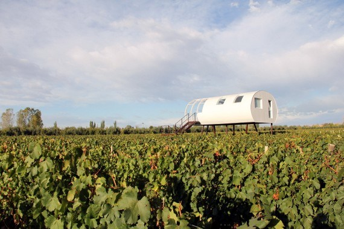
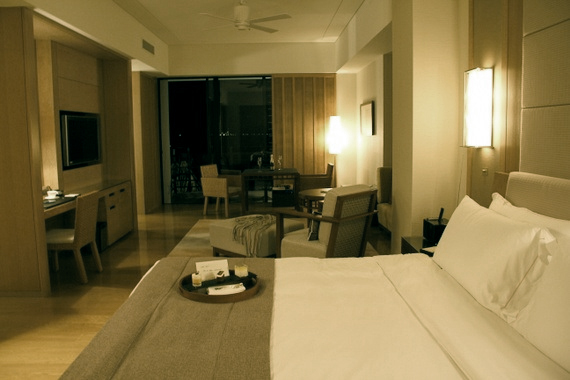
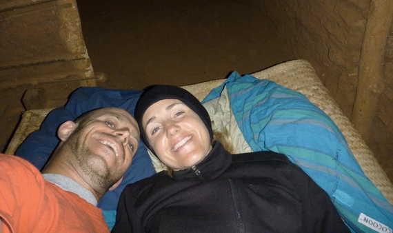
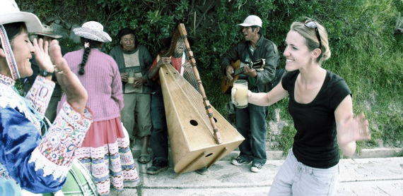
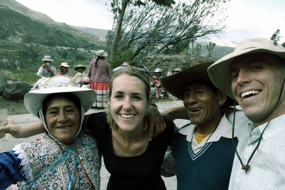
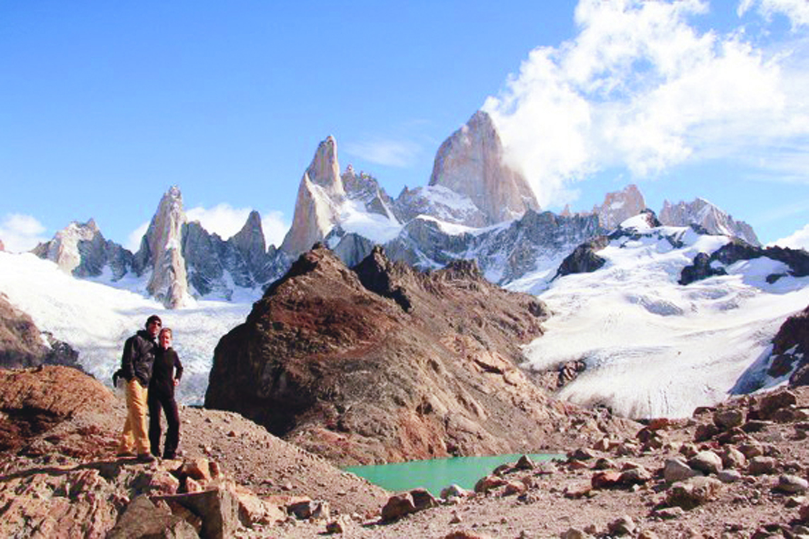
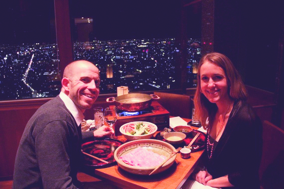
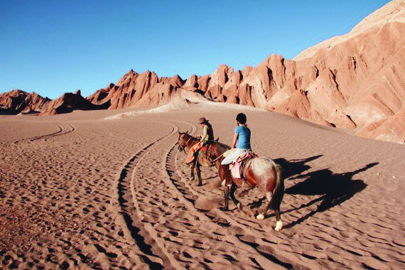

Round The World Honeymoon
This week we talk to newlyweds Anne and Mike Howard. The couple planned a 500-day, round-the-world honeymoon; dubbed it their Honeytrek; and have been blogging about it since the journey began more than a year ago. Their travels sound incredible, but what we really admire is this: Even after more than 365 days on the road, a night spent surrounded by mice in a mud hut en route to Zanzibar, and one instance of credit card theft, the duo still love, even like each other. That’s the real deal, so we decided to ask them just how they’ve turned such a giant dream into reality!
What’s your blog about?
Anne Howard: The idea was that we’re going on a 500-day honeymoon, and within that the goal was to travel to places that were too far to go when we had a job and too rugged to go to when we’re old. To do that, two weeks wasn’t going to cut it. We came up with a bold number of 500 days to experience South America, Asia, Africa and Oceania-New Zealand, Australia, Fiji. At the same time, we’re not filthy rich. So this has really become about rugged meets luxury travel. We try to eat street food and to be as frugal as possible. But, it is a honeymoon, and we also sneak in the occasional five-star resort.
How are you funding your trip?
Mike Howard: Budget-wise, we’ve been saving for a long time. Not necessarily with this in mind, but like everyone, we’ve both been saving for something on the horizon-maybe that would be a house or a kid or a new BMW. We met a couple of friends who were talking about doing a round-the-world trip, and we spoke to another person who had just completed one. So we thought, we could take this nest egg and buy a house or a car, or we can do something that most people wait to do until they’re retired. Why not do this in our late twenties and early thirties, and we’ll have these amazing memories rest of our lives? We’re really scrappy on the road when we’re not in nice resorts, which is maybe two times per month. We’re doing all overland travel, and very few flights-and when we do fly, it’s on miles. We take shared vans and local transport.
What was the best place you stayed and the worst?
Anne: We had ambitious goals to get from a northern part of Mozambique to Zanzibar, Tanzania. We knew it was going to take some time, maybe four days of overland travel. So we wound up hitchiking with these lovely, lovely guys who said, "Come with me and you can stay at my cousin’s place." It was a mud hut in this one-person town. And we were just thankful to have a roof over our head-but then, maybe not. He pulled out this woven bench and pulled it outside, and we’re like, "This is great, thank you." Then it starts to rain, and we’re outside on this woven bench. They had a little pity and brought us into the semi-renovated part of the mud hut, which had a huge dirt heap in this room. We’re in this room, and we can litterally see the mice running around the perimeter in this open-roof mud thatch structure. With every scurry of the mouse, some of the roof drops on us. We’re sharing not even a twin bed but a bench and a half—but at the same time, we could have been on the side of the road. It’s all about perspective.


"It was a mud hut in this
one-person town. And we
were just so thankful to
have a roof over our head"

Mike: We stayed at Entre Cielos in Mendoza, Argentina; only one or two people before us had stayed in the property. They built a loft above an actual vineyard, and brought in a German treehouse architect. To get to the room, you go through the vines, off this ladder, and into this vineyard loft. There was a big Jacuzzi tub out on the porch. It was really great drinking wine there, just having a vineyard loft experience. It was the only one on the property.
Do you ever get sick of each other?
Mike: Going into it, you definitely have this apprehension. We had been to Cuba and Belize and Canada, and we had done a few other trips, but within our five-year relationship, none of them had been more than ten days long. But we’ve just become even better husband and wife than when we started. We learn to give and take, and bounce ideas off of each other, and you learn what the other person likes and how to make the other happy on the road. It’s so amazing to have someone to share those experiences with, and the next day laugh about the scary thing that happend and become stronger for it.
Anne: People were like, "You must really like your husband. I don’t think I could spend that much time with mine." It made me, think, "Yeah, I do really love him. I think it’s going to be okay, right?" People were starting to make me nervous-they put it in my head, you’re going to kill each other. But you start to bond on a level that is not even humanly possible on a regular schedule, where you go to work and catch up at the end of the day. Your brain starts to fuse and you can sense each other’s needs or humor or reactions. We play off of each other really well. If there’s any crap that happens or something that annoys you or whatever, you deal with it. There’s no time to let the petty shit bother you. You can’t get caught up on the little stuff because there is such a bigger task at hand-experiencing where you are.
Most memorable travel moment:
Mike: One of my favorite moments of our trip was in Colca Canyon in Peru. It’s outside of Arequipa, which was a little side trip on the Inca trail. We try to never go with tours, so we just showed up at the bus station and hoped we’d find a local taxi. We met up with this guy, a student studying tourism. We were driving around, and when we came back to town, we asked him, "What are some small little villages that are kind of neat that tourists don’t go to?" He found one, and as we were driving through this town, we came across a group of maybe 20 to 30 middle-aged to elderly people.

We try to learn a few
key words as we're crossing
the border into any country:
hello, thank you, delicious,
goodbye, and cheers.

Anne: They had the most beautiful outfits; very elaborate stitching on these colorful dresses.
Mike: They’re waving to our driver, and they’re like, "Stop, stop." Some of them come up to our window-and they’re speaking in Spanish, and Anne is fluent-and they’re like, "You must dance! If you want to pass you must dance!" Before I know it, Anne gets pulled out of the car. The guys come to my side, and they’re knocking on the window, and they’re like, "Come drink and play music with us." I’m paying the harp with these local guys, I’m drinking a shot out of this old Tampico bottle. We’re there for an hour and the taxi driver says, "I have to go to school!" But they wanted us to stay! They were like, "We’ll get you to the bus tomorrow!" It’s the kind of experience I hope everyone dreams to have. You’re with the local people, and you experience exactly what they do, and it’s not anything packaged.
Most embarrassing travel moment:
Anne: We were in Japan, and onsen culture, the whole hot springs and baths, are deeply part of the Japanese culture. We’ve gotta try it, right? We usually do everything together, but here you’re isolated—men go this way, women go that way. We’re both in these naked baths with all Japanese people. You want to roll in with confidence, but you have no idea how to do things-and you’re naked on top of it. The rule is generally, do what the locals do, but they’re naked. So you don’t want to stare too much. With the level of nudity, it just gets a little more awkward. I don’t know if
I pulled it off; I’m sure they were laughing at me.
Mike: My experience was very similar. Especially for guys, you’re not supposed to check them out. You just have to kind of do your own thing and hope for the best.
Two things you learned the hard way on the road:

Mike: Find out the price or the route or how long something takes. Don’t ask the guy who’s selling the ticket, but try and ask a person at the hotel or someone else in line to buy a ticket. Glean as much info as you can about the trip. We never had a really bad experience, but the price is always a little bit higher for you [as a tourist]. And we’re pretty hard bargainers, so we don’t really like the take-advantage-of-tourists thing.
Anne: This is on the finance side, too, but we thought we were prepared because we had two different credit cards. But they were the same account. We actually had a wallet gone [missing]-we were like, "Crap, I still have my card, but yours is the one missing, so they’re both no good now." That time, we were lucky to be going back to the States, so we could get two different accounts. That way, if you need to cancel one, you don’t have to wait. You have two totally separate debits and credits that are not linked. We feel much more empowered the second time around, knowing that if there’s a snafu we’re not cut off from our finances.
Best food you never thought you’d eat:

Anne: I would say blowfish. One, because it’s more known for its deadly properties than its delicious ones. I had heard it was delicious, but people talk about how you eat it and you can die, so it didn’t go shooting up my list to try. We were invited to dinner at the Park Hyatt Tokyo, and they ordered us blowfish, so you can’t say no to that. It was totally delicious-it was rich and creamy and not deadly at all.
To make friends, I always carry:
Mike: We try to learn a few key words as we’re crossing the border into any country: hello, thank you, delicious, goodbye, and cheers. Those are kind of our five go-to words. It is pretty easy to do when you sit down and practice it and come up with some mnemonics to remember them, but so few people learn how to even say thank you and delicious. We’re eating street food a lot and eating with local people. When you say things like that their eyes light up and they go laughing.
Anne: We were in Cambodia, and they were like, "You speak Khmer?" I said, "No, I just speak delicious!" Even if you mess it up, you might get a laugh out of it. It’s a win-win either way; it breaks the ice and goes a long way for goodwill. People say bring candy, but it’s more about more natural interaction.
What place would you reccommend most, and why?
Anne: We have so many favorite places. But when we try to think about being normal New Yorkers and only having ten days of vacation, Africa is one of the most eye-opening, amazing places you could ever go. We were pretty savvy travelers anyway, but it blew us out of the water. I think Kenya has the whole gamut of true, living, tribal culture. There are hundreds of tribes that are alive and well living completely out of Western concepts. And safari is possibly the coolest thing I could ever imagine-to be that close to elephants and lions and birds I never knew existed.
The travel rule you wish everyone would follow:
Mike: Traveling overland via local transportation; we think that is one of the most valuable experiences we’ve had on our entire trip. A lot of times, people look at a destination and think, "We’re going to be in Vietnam, and we want to hit these four cities up the coast." But you miss so many things when you fly; on land, you see the scenery and the stops and the food stalls and the guys motor biking through the rice fields and how locals live along the way. If you can get on the local bus, you’re with all local people and you’re hearing them on their cell phones and you’re seeing the little kids, and you can use your five words of vocab in Khmer with them. Those little things I think more tourists should experience.
Did partnering with Honeymoons.com affect your travels?

Anne: [Honeymoons.com] wants us to keep our eyes out on the most romantic places around the globe-that was a pretty cool task at hand, so they’ve left it in our court to find the most fantastic places. Being given that opportunity and having the chance to review them, we’ve seized that, because we won’t be on our
honeymoon forever.
Mike: One thing that we love about the way that we’ve set up this partnership is that we’re never told by Honeymoons.com or any hotel who we should review. They say, "Go anywhere you want in the world, and you guys pick the hotels that are the most luxurious, but you only review the ones that you really love."
Anne: I would say make sure that you do see the whole range of properties. Make sure that you splurge one night; go all out, stay somewhere that is supposed to be the most beautiful and dreamy sort of place for that culture. And then also know how to rough it and live in a mud hut, because both are important experiences-we would do it this way anyway.